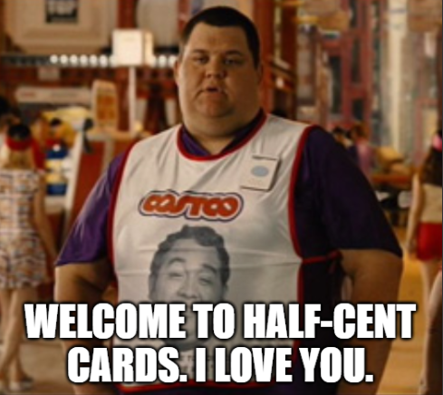

Welcome!
This website was created by me, Julian, a University of Pittsburgh student with apparently way too much time on his hands. Like, WAY too much time. We're talking countless hours of sorting, cataloging, and coding.
I started collecting baseball cards around 2013. About 75% of my collection is from both the junk wax era (a period roughly between 1986 and 1993 when card companies overproduced low-value cards) and 2013-2019, when I purchased/was gifted Topps packs every year. My favorite teams growing up were the San Diego Padres and Oakland Athletics; so, unsurprisingly, over a fifth of my collection is Padres and A's cards.
However, they aren't all just some mass-produced rectangular pieces of cardboard. There are some cool-ish cards. Some even have stories. Like how my grandmother gifted me three different Tony Gwynn rookies. Or the random 1976 Topps Hank Aaron I found while sorting. And how Gaylord Perry himself handed me an autographed card at the 2016 MLB All-Star FanFest in San Diego.
3,997 is the final count. This is subject to change, as I'll inevitably collect more cards and keep updating this website. Each list is sorted by year.
Throughout your adventure, you'll find hundreds of players you've probably never heard of and whose cards are only worth about half of a cent--hey, that's the name of the website!
Now sit back, relax, and please email me if you find anything even remotely valuable (or if I made a mistake in cataloging) at this email address.
Thanks for stopping by,
Julian